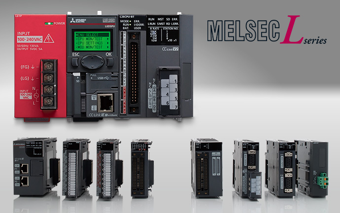
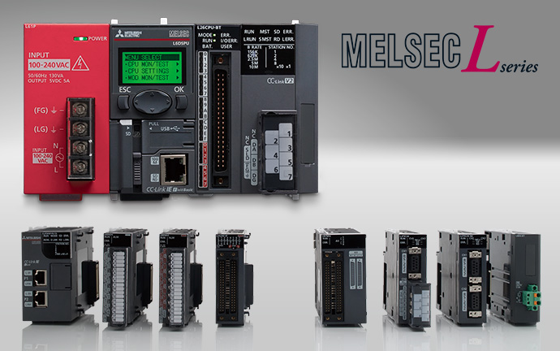

Controllers MELSEC-L Series
Fitur Produk -Kontrol Analog/Suhu-

 
Kontrol suhu yang sangat stabil
Kontrol standar/kontrol pemanasan dan pendinginan
Mencegah panas berlebih dan pendinginan berlebih pada perangkat yang memerlukan tingkat stabilitas suhu yang tinggi, seperti pada mesin cetak ekstrusi.
Metode kontrol berikut dapat dipilih sesuai dengan perangkat target.
- Kontrol standar (pemanasan atau pendinginan)
- Kontrol pemanasan/pendinginan (pemanasan dan pendinginan)
- Kontrol campuran (kombinasi kontrol standar dan kontrol pemanasan-pendinginan)
■Contoh: Kontrol standar (hanya pemanas)
Suhu objek dikontrol dengan menyesuaikan keluaran pemanas berdasarkan perhitungan PID yang dihasilkan dari masukan sensor suhu.

■Contoh: Kontrol pemanasan-pendinginan (elemen pemanasan dan pendinginan dikontrol secara bersamaan)
Pemanasan dilakukan saat suhu objek kontrol lebih rendah dari suhu target, dan pendinginan dilakukan saat suhu lebih panas atau kelembapan perlu dikurangi.
Kurangi biaya operasional dengan memanfaatkan efek penghematan energi
Fungsi kontrol arus puncak
Fungsi kontrol arus puncak mengurangi arus puncak dengan secara otomatis mengubah nilai batas keluaran atas untuk setiap saluran, sambil membagi waktu keluaran transistor*1. Energi yang dihemat dengan mengurangi arus puncak, seperti pengurangan kapasitas daya sistem dan pengurangan daya yang dikontrak, dapat membantu mengurangi biaya operasional.
- *1.Waktu dapat dibagi antara dua hingga empat keluaran.
Ketika dua atau lebih beban sedang dikontrol, arus puncak dapat diminimalkan dengan menyebarkan beban total dari waktu ke waktu.

Memastikan kontrol suhu yang seragam
Fungsi kenaikan suhu yang simultan
Memastikan kontrol suhu yang seragam dengan menyinkronkan waktu kedatangan suhu dari beberapa loop.
Lakukan kenaikan suhu yang seragam menggunakan dua atau lebih loop kontrol tanpa melebihi suhu atau mengakibatkan ekspansi termal yang tidak diharapkan.
Format "tanpa pemalasan" meningkatkan efisiensi energi dan mengurangi biaya operasional.
■Contoh: Kontrol suhu mesin cetak injeksi
■Contoh: Proses pemanasan wafer untuk pembuatan semikonduktor

■ Tanpa fungsi kenaikan suhu simultan

■ With the simultaneous temperature rise function
Dengan menggunakan fungsi ini, Anda dapat mengoordinasikan kontrol dua atau lebih loop untuk mencapai nilai target (SV) secara bersamaan. Kontrol kenaikan suhu loop terpisah secara bersamaan dengan menetapkan grup saluran (Maks. 2 grup).
Ini adalah cara yang efektif untuk mengontrol aplikasi yang waktu kedatangan suhu targetnya berbeda dan dapat mengakibatkan perbedaan suhu yang tidak diinginkan.